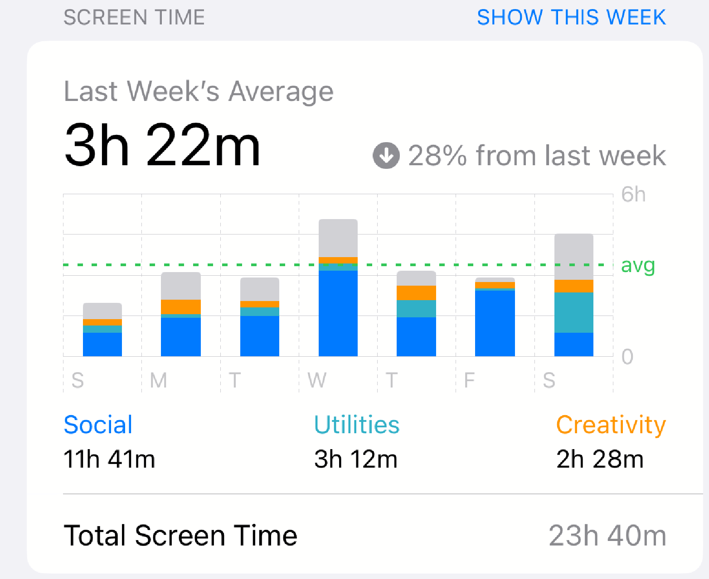

lifestyle changes
february 20th, 2023 · tldr

Coming to Terms
In late December 2022, I returned home for break after a draining first quarter of university. Fall quarter was a sobering crash back to reality from my euphoric summer. I struggled to readopt the productive habits of a good student, my senioritis from high school spilling into college. I scrolled on my phone too much, I ate plenty of junk food, I only occasionally left my room to socialize, I wasn’t exercising enough, I struggled to perform on exams like I normally do, and my extracurricular life was painfully dry.
Bottom line, my life was in shambles by the end of last year, so I decided to take drastic action. Here are some of the lifestyle changes I’ve taken on, as well as my honest review of their impact on my life.
Social Media Purge
To me, this was the most obvious change to make. Amidst the World Cup and all the speculation that preceded it, my media consumption was at an all time high. I had enough. I began to have new epiphanies about social media. I don’t care what people are doing, especially people I don’t even know. It’s brain clutter that gave the illusion of being occupied when I hadn’t much of anything meaningful going on.
I’ve been a social media user for over seven years, so I weaned off slowly, deleting two apps a week starting in December. I’ve since deleted the following apps from my phone in this order: BeReal, TikTok, Instagram, Twitter, Reddit, Snapchat, YouTube, and LinkedIn. Interestingly though, it was quite easy to rid my life of these apps because I had become truly aware of how little I was gaining from all the time I spent scrolling.
My screen time has since halved. I now use my phone primarily for texting, FaceTiming, and quickly looking things up. This totals to roughly 3.5 - 4 hours a day: still a sizable chunk of time, but that just proves how unhealthy my habits were before. I’d like to think my headspace and attention span are beginning to heal even though I am just six weeks into undoing nearly a decade’s worth of cheap, quick-fix entertainment. I still occasionally check each of them on the web app to make sure I’m not missing any important messages, and I rarely am. This brings me to a key takeaway: I’m missing a lot less than I thought I would by deleting social media. If a piece of news is important enough to be worth knowing, I’ll hear about it some other way such as word of mouth. I have nothing but positive things to say about deleting these apps.
Gym
Dragging myself to the gym and putting myself through the pseudo-torture of lifting weights until my muscles are fatigued doesn’t exactly feel amazing. So during the rest of the day, it’s hard to attribute my clear head, optimism, and high spirits to the gym. But on the days I skip the workout but leave every other action unchanged, my comparatively restless, unproductive, and unsatisfied mood reminds me that exercise does in fact offer the most powerful mental benefits out of any lifestyle change I’ve taken.
I don’t care too much about looking a certain way or impressing anyone. I just lift to feel good and accomplished. That’s why I don’t feel the need to push myself to tears on every set. Just the act of going to the gym and putting some effort in is enough for me right now. And sure, maybe I’m a little curious how I’d look after an extended period of consistency.
The 7 AM Wake-Up Experiment
It’s always been a known fact to me that waking up late sucks. In December of 2021, for example, I woke up at noon almost every day. Four hours later, the sun was going down, and I suffered the the next twelve hours in darkness. Waking up early ensures the most daylight possible, and daylight is like crack for my mood.
I decided to kill two birds - the daylight-seeking bird and the gym-going bird - with one stone. I woke up at 7 AM to go to the gym every day for a month. It made the pain of curling weights all the more miserable. But it did get me that daylight I was searching for. I truly needed the accountability of my friends waking up and working out, otherwise I wouldn’t have been able to do it. The image of them getting up and me choosing to stay asleep despite being capable of joining them is a ridiculously effective motivator. Overall, I think that waking up at 8 AM and instead going to the gym after classes would have been much better, but I’m glad that I immersed myself in the ruthless discipline that is 7 AM.
The Do-Nothing Challenge
A few years back, I watched a Veritasium video about the strange benefits of boredom. He explains a study in which participants were told to hold tight while the researcher went to fetch some equipment. In the minutes that participants were alone in the room, they had the option of pressing a button that would cause an unpleasant shock. Though this button caused them literal physical harm, they would rather be stimulated than just be bored. Another experiment, in which participants were asked to answer a creative question, revealed that those who were given a set of mundane tasks to complete beforehand were significantly more creative.
I began to ponder the interplay between boredom and entertainment, and I realized that I’m either entertained or occupied from the moment I wake up to the moment I drift off. An exception to this would be during my daily shower, but even then I am occupied with cleaning myself. I never actually am doing absolutely nothing at any given moment.
My friends and I began a month-long challenge to complete fifteen minutes of ‘nothing’ every day. That is, sit down with zero distractions and just stare off into space, letting the mind run free. I would consider this challenge to be a peaceful act of meditation. Admittedly, I only did my time about four times a week, but this was enough to spur some interesting thoughts. After each session, I reflected on my thoughts in a journal entry. Here are some highlights:
1/7: All my thoughts were stressful and school-related but I dismissed them. Need to get better at letting go of bad thoughts
1/9: Did my time after barely missing the bus, so I began in a state of anger and frustration. Aimed to calm down with deep breaths and rationality; worked decently
1/16: One of my goals is to stop letting hatred for people affect me, but I realized that I’ve been training my brain to get angry when I think about bad people. Need to undo this.
1/18: The reason that people have epiphanous shower thoughts is because it’s the only time of day they can just sit and think. These 15 minutes of do-nothing open up another window of time to “just sit and think”
1/19: I really wanted to grab that ball on the floor, then I realized this challenge is meant to help me overcome the urge to seek stimulation while trying to focus. Random thought: alarm clocks are terrible because they make you start your day off with anxiety and stress and an urge to shut something up.
These are some decent little reflections, and stuff that I don’t really have time to think about otherwise. However, I think the do-nothing challenge has reached its timely conclusion as I look to preserve those streaks of productive momentum.
Conclusion
My life has improved significantly since I’ve implemented these changes. My standard for work ethic, focus, and productivity has increased. These outcomes are logical, predictable. Yet somehow, things have clicked even beyond these improvements. I somehow feel that all my frustrations, struggles, and insecurities about completely unrelated things such as friendships, career worries, and a sense of purpose, have largely dissolved.
After Fall quarter, I regretted so much. But I'm now grateful for the mistakes I made, for the pit that I had dug for myself. That pit serves as my "why" for the choices I consciously make every day. Making a beeline to the IMA after class, choosing to fill my cup with water instead of Coke, and putting my phone away to get to work all require an ounce of resistance. To sum up the willpower needed for this ounce of resistance, I simply refer back to my "why", and it becomes easy.
...
tl;dr: In the past six weeks, I've attemped to break some bad habits of mine through rigorous lifestyle changes. Some habits, like poor diet and exercise, have been more recent pitfalls. Others, such as social media addiction and hyperstimulation, are deeply rooted. I've experienced great improvements in my mood and success from these changes, and I'm excited to continue them.